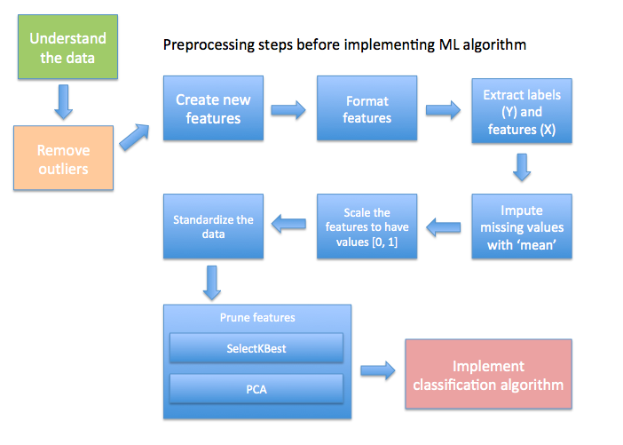
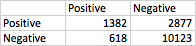

Udacity course material : Pattern Recognition for Fun and Profit
Source of the project : Github
Main scrips/module developed for this project:
- poi_id.py Main entry point, this is where the calssification model is implemented
- enron/preparation.py Utility function used for the dataset exploration and the outlier filtering
- enron/feature_processing.py Utility function used for the feature engineering step of the project (create new feature, scale, impute, ...)
- enron/algorithm.py Class implementing an abstraction layer for the pipelines used in the gridSearchCV implementation
- log.txt Log from the full run of the script recorded with the command "python2.7 poi._id.py >> log.txt"
Introduction
Enron Corporation was an American energy, commodities, and services company based in Houston, Texas. The company bankrupted on December 2, 2001. It was one of the wold’s major electricity, natural gas, communications, and pulp and paper companies.
At the end of 2001, it was revealed that its reported financial condition was sustained substantially by an institutionalised, systematic, and creatively planned accounting fraud, known as the Enron scandal.
This story is also known in that over 600.000 typically confidential emails (Enron Corpus, Enron Email Dataset) from 158 employees were released after the bankruptcy.
Goal of the project
The goal of the project is to build a predictive model to identify persons-of-interest (POI’s) in the fraud case. A person of interest is someone who was indicated for fraud, settled with the government, or testified in exchange for immunity. This report documents the machine learning techniques used in building a POI identifier.
The project will explore the four main pillar of a machine learning project
- Dataset (understand the dataset, formulate the question)
- Feature (feature exploration, selection, scaling, transformation eventually creation)
- Algorithm (pick the right algorithm and tune it)
- Evaluation (validate, select metrics)
The Enron Dataset
There are 146 records, 21 features available.
There 18 POI’s in the original dataset.
Outlier filtering and data cleaning

By visualising the "salary" and “bonus”, we see a clear outlier. “TOTAL” was removed as it was a record totalling all of the financial statistics from the financial data.
As part of the pre-processing step, one person (LOCKHART EUGENE E) was detected with 19 NaN. This person was removed from the removed.
Feature processing
The following drawing show the main steps involve in the feature engineering process.
Add New Features / Feature engineering
Feature Engineering is the process of using domain knowledge of the data to create features that make machine learning algorithms work better. Some simple new feature were created for this project
fraction_to_poi / fraction_from_poi : POI’s may have particularly strong email connections between each others, they send emails to other POI’s at a rate higher than for the general population. However, the number of emails (from / to POI’s) as such is not that helpful, we don’t see a clear trend just with the number. Therefore, we computed the fraction of email a person receives that come from a person-of-interest. So the percentage of emails received or sent from/to a POI’s. We also computed the fraction of emails sent to a POI.
Financial ratio : These ratio were calculated for the "payments" and the "stocks" features repectively against their total.
For this project, the effect of these new features on the best algorithm is not very impressive however it is contributing to a higher precision for the best model, the precision (P) / recall (R) without the engineered features drop from P:0.32449 / R:0.69100 to P:0.31827 / R:0.68300.
Feature Scaling
For this project feature scaling was used for all algorithms more precisely all features has been scaled to be between 0 and 1 using MinMaxScaler. However, it is important to mention that some machine learning algorithms require scaling (SVM, K Nearest Neighbors, K Means for example) and some do not (linear / logistic regression, decision trees).
Models using distance-based with Euclidean distance are especially affected with features creating big range just because a difference of values for that feature is bigger, this is why we should implement feature scaling.
For the algorithms requiring feature scaling, the features needed to be scaled especially as they were on vastly different scaled, ranging from hundreds to millions of dollars and also from positive to negative values (deferrals features, deferred_income and restricted_stock_deferred)
Also, it is worth to mention that logistic regression in general does not require feature scaling. It can be used to speed up certain logistic regression algorithms, but it doesn't require scaling in and of itself. Scaling probably won't hurt the algorithm but it doesn't need it. The theta values that get calculated as part of the logistic regression algorithm makes scaling unnecessary.
Feature Amputation
As the data set contain missing values and scikit-learn estimators assume that all values in any array are numerical, and that all have and hold meaning, we apply a basic imputation technique which correspond to the replacement of all NaN value using the mean of the columns (axis 0) that contain the missing value.
Feature Standardization
Feature standardization makes the values of each feature in the data have zero-mean (when subtracting the mean in the enumerator) and unit-variance.
The general method of calculation is to determine the distribution mean and standard deviation for each feature. Next we subtract the mean from each feature. Then we divide the values (mean is already subtracted) of each feature by its standard deviation.
PCA (used in the feature reduction step below) generally requires standardization since it is a variance maximizing excerice. PCA projects the original data onto directions which maximize the variance.
Feature Reduction
In order to optimise the model, I apply two techniques to prune the features.
SelectKBest dimension reduction has been used first in order to investigate how the accuracy of a classifier varies with the feature size. Scikit-Learn provides several methods to select features based on Chi-Squared and ANOVA F-values for classification. In this short notebook section, the accuracies has been computed with various feature sizes for 10 different classifiers, using both the Chi-squared measure and the ANOVA F measure.
The resulting K-best (using ANOVA F classification scoring function) features were then apply into Principal Components Analysis (PCA) dimensionality reduction. Finally the resultant N principal components were loaded into a classification algorithm.
This notebook section is showing some investigation made on the PCA process which conclude to an optimal n_components number of 5 for this project.
Note concerning PCA : It is not always the best idea to implement PCA for feature selection as PCA is a form of lossy compression, so we can end up losing some information contained in the data when PCA is applied. Nevertheless, in this project, as the data are properly normalized, the impact of PCA is very limited. While testing the model, no major losses in precision was detected with our without PCA.
Classification algorithm / Grid search
As we wanted to avoid testing multiple combinations of parameters in order to get the best performance of the model, we used the GridSearchCV algorithm with the pipeline paradigm.
Algorithms tunning using different combination or parameters is very important because if this step is not done properly it can conduct to an over-tunning sistuation where the algorithm to predict on the training data is working very well but fail totally when it is run on new data.
We can think of each algorithm parameter as a dimension on a graph with the values of a given parameter as a point along the axis. Three parameters would be a cube of possible configurations for the algorithm, and n-parameters would be an n-dimensional hypercube of possible configurations for the algorithm. The objective of algorithm tuning is to find the best point or points in that hypercube for the problem.
Therefore, each algorithm of this project were tuned to using an automated method that impose a grid (Grid search) on the possibility space and sample where good algorithm configuration might be. This search has been made over 1000 randomized statified corss-validation splits. The parameters giving the highest score were then selected for the final model.
The logic behind the grid search for optimal parameters can be split into two main steps
First, the classifier is being created, we pass a pipeline and the directory of parameters to try.
The pipeline is a combination of 3 elements:
- The ‘selecter’ : selectKBest dimension reduction.
- The ‘reducer’ : principal components analysis (PCA) dimension reduction.
- The ‘classifier’ : classifying algorithm.
The purpose of the pipeline is to assemble several steps that can be cross-validated together while setting different parameters.
The grid takes SelectKBest and PCA and run them during each of the cross-validation loops to generate a grid of parameters combinations for the classifier.
Cross-validation is a process of randomly splitting the data into training and testing data. Then the model can train on the training data, and be validated on the testing data.
The cross validation loops has been implemented with a stratified ShuffleSplit cross validator iterator StratifiedShuffleSplit. The folds are made by preserving the percentage of samples for each class.
Practically, 1000 iterations where chosen with 10% of the dataset is included in the test split. If we would increase this number, it would result to a negative impact on our model due to the very small size of the dataset.
Note concerning Valiation : The validation step is an important step in the machine learning implementation chain. A classical mistake that could happen is to have a model that is tunned perfectly for the training data but when it perform on unseen data it perform poorly. This mistake is called overfitting. The cross-validation step implemented for this project is actually taking care of this problem.
Second, the fit function tries all the parameter combinations, and return a fitted classifier that’s automatically tuned to the optimal parameter combination. For each parameter of each model, a range of value is provided to find the best combination (e.g. 'k of the selector': 5 to 20, etc.)
The full process so far is summarised with this simplistic picture.
For performance constrains, not all the classifier were implemented. Only the following where deeply investigated : Logistic Regression, Linear Support Vector Machine, Support vector Machine, Random Forest, K-nearest neighbors, AdaBoost and finally Naive Bayes.
Practically each classifier were tuned individually to get the maximum recall of the model, then each optimised model were run one by one in a loop resulting to the best model.
Here is a summary of best parameter for the winning model optimised for best recall
- Classifier : Support Vector Machines
- Cross-validated recall score : 0.8915
- 12 features selected
- Top features : ['salary', 'total_payments', 'loan_advances', 'bonus', 'deferred_income', 'total_stock_value', 'expenses', 'exercised_stock_options', 'long_term_incentive', 'restricted_stock', 'shared_receipt_with_poi', 'fraction_to_poi']
- Reduced to 5 PCA components
- Best parameters : {'reducer__n_components': 5, 'classifier__class_weight': 'auto', 'classifier__tol': 0.001, 'selecter__k': 12, 'reducer__whiten': True, 'classifier__gamma': 0.0, 'classifier__kernel': 'rbf', 'classifier__C': 1.0}
Performance :
- Accuracy: 0.76700
- Precision: 0.32449
- Recall: 0.69100
- F1: 0.44160
- F2: 0.56367
Total predictions: 15000
True positives: 1382
False positives: 2877
False negatives: 618
True negatives: 10123
Since the code automatically searched for the best performing algorithm showing details of individual algorithm does not add any value to this text however, here is the recall / precision recorded for each model.
- Logistic Regression : Precision: 0.30868 / Recall: 0.56550
- Support vector Machine : Precision: 0.32449 / Recall: 0.69100
- K-nearest neighbors : Precision: 0.34146 / Recall: 0.11200
- Random Forest : Precision: 0.39286 / Recall: 0.17600
- AdaBoost : Precision: 0.31367 / Recall: 0.21800
- Naive Bayes : Precision: 0.47862 / Recall: 0.25750
Performance Metrics
A clean and unambiguous way to present the prediction results of a classifier is to use a confusion metric (also called a contingency table). For this project, we have a binary classification problem, therefore the table has 2 rows and 2 columns. Across the top is the observed class labels and down the side are the predicted class labels. Each cell contains the number of predictions made by the classifier that fall into that cell.
Here is the confusion matrix for the model identifying POI’s. (15000 predictions made) 
In this case, a perfect classifier could correctly predict 1382 POI's and 10123 non POI’s. Incorrect predictions are the other two cells. False negatives which are POI that the classifier has marked as non POI’s; false positives are non POI that the classifier has marked as POI’s.
As we have a very limited number of POI’s, the accuracy evaluation metric could not be considered as an factor of consideration to judge the quality of our model.
The accuracy is the number of correct predictions made divided by the total number of predictions made. In this case the model that only predict POI’s would achieve an accuracy of (1382 + 10123) / 15000 = 76,7%. This is a high accuracy. If it was used alone for decision support to inform the investigator of the fraud case, it would clear out 150000 - (1382 + 10123) = 3495 persons with incorrectly thinking their status was effectively POI’s (high False Negatives).
Therefore, for this model we are using two metrics, the ‘precision’ and the ‘recall’. Precision and recall are the basic measures used in evaluating search strategies.
Recall is the ratio of the number of relevant records retrieved to the total number of relevant records in the dataset.
Precision is the ratio of the number of relevant records retrieved to the total number of irrelevant and relevant records retrieved.
Recall and Precision are inversely related therefore, as recall increase, the precision decrease, conversely, as recall decrease, the precision increase.
High precision means that an algorithm returned substantially more relevant results than irrelevant, while high recall means that an algorithm returned most of the relevant results.
In the context of this project, the precision would be how often the people choose to be tested were really a POI’s.
On the other hand, the recall would be seen as the number of POI’s the model identified from the total number of POI’s in the dataset.
The purpose of the project, as explained earlier, is to identify whether someone is a possible person of interest, we can see the benefit of this method to reduce the amount of workload for the investigators of the corporate fraud. For that reasons False negatives are probably worse than false Positives for this problem. More detailed screening of the person can clear the False positive, but False negative are cleared by the model without further investigations.
To that extend, the project has been tuned for an high recall as this metrics is the most important element of the model. Really what we would like is to find all people who were involved in the fraud, we could tolerate some non-involved people picked by the model because the consequence will be limited.
Conclusion
Problems
First, one of the most challenging task was the understanding of the the features of the dataset. Coming up with features is difficult, time-consuming, requires expert knowledge.
Second, during the implementation of the grid-search I came across some weird error messages I was not able to understand. Here are some example
- Precision is ill-defined and being set to 0.0 due to no predicted samples.
- UserWarning: Features [3] are constant.
- RuntimeWarning: invalid value encountered in divide f = msb / msw
Conclusion
The dataset of this project is very small therefore, the training set is also very small therefore, high bias/low variance classifiers (e.g. Naive Bayes) have an advantage over low ban/high variance classifiers (e.g. kNN), since the latter will overfit. But low bias/high variance classifiers start to win out as the training set grows (they have lower asymptotic error), since high bias classifiers aren't powerful enough to provide accurate models.
The main message from this project is the fact that better data often beats better algorithms, and designing good features goes a long way. Also, with bigger dataset, whichever classification algorithm is chosen does not matter in terms of classification performance, therefore, the privileged choice would be to select an algorithm based on speed or ease of use. However, if really the accuracy / recall or precision is of concern than trying a bunch of different classifiers and select the best one by cross-validation is the preferred way to go.
Reference
Should I normilize / standardize / rescale my data
How to split the dataset for cross validation, learning curve, and final evaluation?
Measuring Search Effectiveness